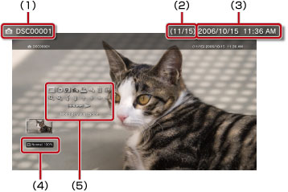

Foto > Uso del panel de control
Uso del panel de control
Puede realizar diversas operaciones mediante el panel de control en pantalla. El panel de control se puede mostrar u ocultar pulsando el botón  .
.
Modo de visualización

Permite modificar el tamaño de la imagen que se muestra en pantalla.
| Normal | Elija este ajuste para mostrar la imagen ajustada al tamaño de la pantalla pero sin modificar las proporciones. |
|---|---|
| Zoom | Elija este ajuste para mostrar la imagen a pantalla completa pero sin modificar las proporciones. Las partes superior e inferior e izquierda y derecha de la imagen quedarán cortadas. |
Nota
Es posible que, en función del archivo de imagen, no se pueda cambiar el modo de visualización.
Cambiar efecto
Permite modificar el modo en que cambian las imágenes.
| Normal | Seleccione este ajuste para reemplazar la imagen que se muestra actualmente por la siguiente. |
|---|---|
| Diapositiva | Seleccione este ajuste para reemplazar la imagen que se muestra actualmente por la siguiente en formato galería. |
| Fundido | Seleccione este ajuste para utilizar el efecto de fundido para pasar a la imagen siguiente. |
Recortar
Elimine las partes innecesarias situadas en la parte superior, inferior, izquierda o derecha de la imagen. Use los joystick izquierdo y derecho del mando inalámbrico para seleccionar el área que desee conservar. Utilice el joystick izquierdo para desplazarse en cualquier dirección y utilice el derecho para acercar o alejar el zoom. Las imágenes recortadas se guardan con un nombre de archivo diferente.
Nota
Solo se pueden recortar las imágenes almacenadas en el almacenamiento del sistema del sistema PS3™.
Agregar a lista de reproducción
Agregue una imagen a una lista de reproducción.
Nota
Solo se pueden añadir a la lista de reproducción las imágenes que se han guardado en el almacenamiento del sistema.
Imprimir
Imprima una imagen mediante una impresora.
Nota
Para imprimir, es necesario que configure primero la impresora en [Selección de impresora] en  (Ajustes) >
(Ajustes) >  (Ajustes de impresora).
(Ajustes de impresora).
Establecer como imagen de fondo
Establezca la imagen que se muestra en pantalla como imagen de fondo. La imagen se ajustará exactamente como aparece en la pantalla, sea ampliada, reducida o girada.
Notas
- Si no se utiliza ninguna imagen de fondo, configure el ajuste en (Ajustes) >
 (Ajustes de tema) > [Fondo de pantalla].
(Ajustes de tema) > [Fondo de pantalla]. - Sólo es posible establecer una imagen de fondo. Si se selecciona otra imagen, se sobrescribirá la actual.
Eliminar
Elimine imágenes.
Nota
Solo se pueden eliminar las imágenes que se han guardado en el almacenamiento del sistema.
Visualizar
Permite visualizar la información sobre una imagen. Cada vez que pulse el botón  , se alternará entre la pantalla que dispone de información Exif, la pantalla con una barra de información y la pantalla que no dispone de información adicional.
, se alternará entre la pantalla que dispone de información Exif, la pantalla con una barra de información y la pantalla que no dispone de información adicional.
Pantalla con una barra de información

(1) |
Nombre de imagen |
|---|---|
(2) |
Número de la imagen / número total de imágenes |
(3) |
Fecha y hora de grabación |
(4) |
Icono de estado |
(5) |
Panel de control |
Acercar zoom/Alejar zoom

Acerque o aleje el zoom para ampliar o reducir la imagen. Es posible utilizar el joystick izquierdo del mando inalámbrico para desplazarse en cualquier dirección y el joystick derecho para ampliar o reducir la imagen.
Rotar a la izquierda / Rotar a la derecha
Permite rotar la imagen 90 grados a la izquierda o a la derecha.
Arriba / Abajo / Izquierda / Derecha
Permiten mover la imagen para visualizar cualquier parte que haya quedado oculta como, por ejemplo, cuando (Modo de visualización) se ajusta en [Zoom].
Anterior / Siguiente
Permite visualizar la imagen anterior o siguiente.
Galería
Permite visualizar automáticamente todas las imágenes por orden.